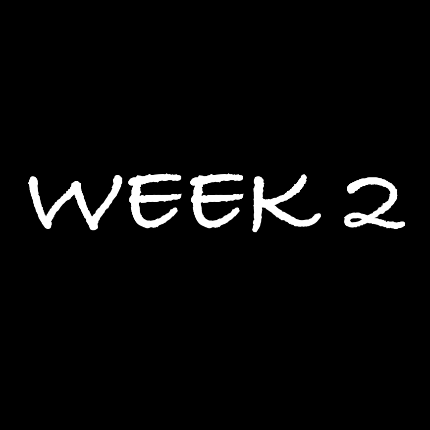
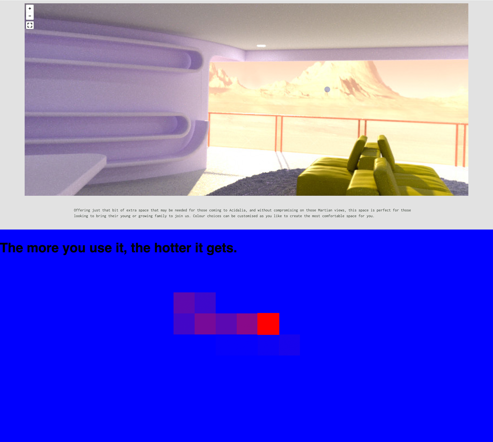
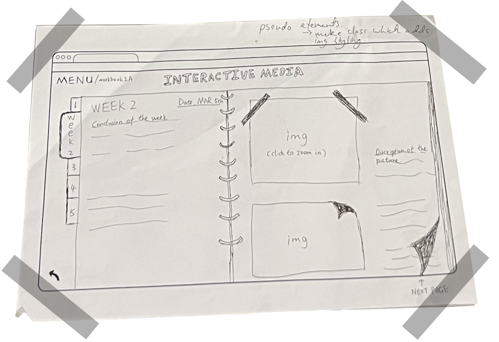

WEEK 2
In this week's course we have been exploring lots of different types of websites such as portfolios, music, and gallery websites.
We have also practiced paper prototyping through activities, and then decided on the type and design of the workbook website we will be creating.


I'm quite impressed with the Mars City Acidalia and myshrine sites, both of which use animation to give a good visual effect
We then did the CRAZY EIGHT activity where we quickly drew 8 interfaces for mobile or pc. This activity was a great way to stimulate our creativity, and after drawing the usual designs we would then draw some of the crazier ones.
This activity was a great way to stimulate our creativity, and after drawing the usual designs we would then draw some of the crazier ones.


Finally, I made a sketch of my workbook interface on a piece of paper.
My idea was to make it look like an open book, with pictures and text as notes in the "book"!